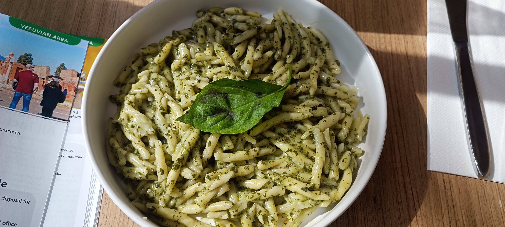
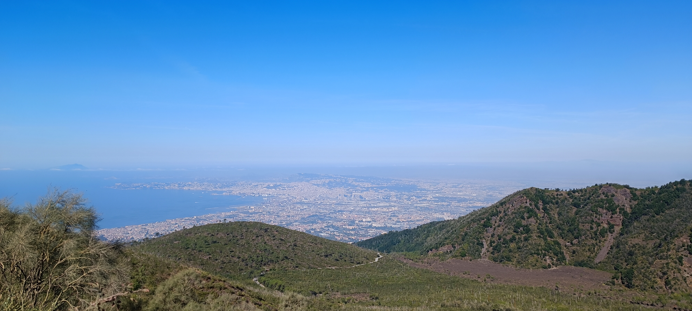

Rome and Naples
This trip is one of my favourites. It came after a very bad time in my life and I just had to get away from everything. My best friend died, my girlfriend dumped me and I finished my second year of my bachleor's. The funny side of the story is that my first niece was born the day I flew to Rome so I almost missed her but I saw her for like 5 minutes before I went to the airport and I couldn't wait till I get back home. I wanted to visit Rome for like forever and it exceeded every expectation I had. The history, the food, the views from the Amalfi shore, the hike on mount Vesuvios, everything was great. In this trip, I also went to Naples, Sorrento, Pompeii, Amalfi and Salerno. It was my first solo trip and I was shitting bricks but it turned out to be one of my best trips ever.
Picturesque Moments





Favourite attractions:
-
Trevi fountain
There's a reason this is one of the most touristed places on earth. It's a beautiful fountain with many scupltures and a sense of magic. A great photo for Instagram but it is so busy there that it's almost not worth it. The emphasis on the almost.
-
The Colosseum
Everyone heard about this place. The great amphitheatre where gladiators fought to death. It's frickin' awesome! However, it is also so busy that you have to book a tour inside and you'll still wait in line to get in. In this heat, I didn't have the patience to wait but you might have. Still, take a picture of the place from the outside. You have to.
-
Naples
Look, you might have heard about the Napolitean pizza or the Sfogliatella and said you have to go to naples for that. Yes, absolutely. However, I must warn you. Naples is not as pretty as Rome. It is a great place for foodies but that's about it. I did not find myself in that city, but it's okay. Maybe I'm just not the target audience. Not to mention the airport incident...
-
The Amalfi Shore
Oh my god. If there's heaven, I must have found it. A train ride south to Naples lies this magical piece of land. Iv'e been to three cities in one day using train, bus and a ferry to experience this place and I can't get enough. First of all, Sorrento is totally in my top 5 cities. Then, a bus ride over the cliff to Amalfi which is full of tourists but I found myself reading a book on the dock which was awesome. and Last but not least, a ferryt to Salerno with its beautiful promenade and great beaches. You have to go to Amalfi at least once in your lifetime.
-
Mount Vesuvios
This was my first time hiking alone and on an active volcano, no less so you can imagine it was an amazing experience. You can't really see the lava so it was a bit anti-climactic but the view on the gulf of Napoli was one of the best. The hike itself is not that hard, You just need a taxi or a car to get to the start of the trail from the city and then it's piece of cake. There's also a kiosk on the end of the road so that's nice.
Travel Tips:
- Learn Some Italian: Mama Mia! Italian is the best language on earth and you can't change my mind! It's really romantic and you might as well learn some Italian while you're there such as : mi chiama (my name is) and buon giorno (good morning). They are very polite and they love when someone try and talk in their language so don't be shy.
- Pizza and Pasta:I mean, when in Rome... But really, I ate pasta every single day and I regret nothing! The main tip about this is everything is expensive but pasta should be cheap so when you scour a menu, watch for the most expensive pasta in the menu, if it exceeds 20 euros, you need to get out of there cause it's a ripoff.
- The Vatican: Although I booked a b&b near the Vatican, I didn't get inside.There was so much people watiting in line and I don't have the patience to wait. I already have the "The Creation of Adam" in my room, I don't have the need to get inside the Sistine Chapel that much. I bought a souvenir outside and went to another direction. Most say it's worth it. Maybe next time.
- The history: There is so much to see. Agora, The Spanish stairs, Trevi, The Pantheon,Piazza Navona and the list goes on. There's a reason the Roman Empire was one of the strongest empires in history.
- Beware of pickpocketers: Because Rome has so many tourists, it has a lot of tourist scams and pickpocketers. Especially in the Trevi fountain area, beware of such people and be sharp of your belongings.